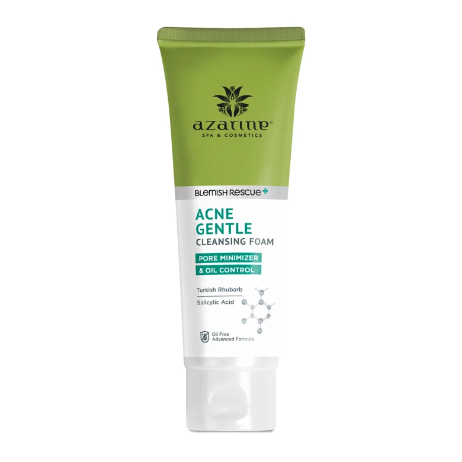

Azarine Gentle Acne Cleaning Foam
Azarine Gentle Acne Cleaning Foam adalah pembersih wajah yang membantu membersihkan jerawat dan mengontrol sebum.
Diformulasi dengan bahan alami seperti krokot, madu, dan asam salisilat
membantu mencegah pertumbuhan bakteri penyebab jerawat, menghilangkan minyak
berlebih di wajah, dan mengecilkan pori-pori.
kisaran harga: Rp.35.000
Kegunaan Pembersih Azarine Gentle Acne Cleaning Foam:
- Membantu membersihkan pori-pori kulit secara mendalam.
- Membantu menghilangkan sel kulit mati.
- Membantu kulit halus.
- Membantu mengurangi bakteri penyebab jerawat meski lemah.
- Membantu menenangkan kulit bahkan ketika kulit rapuh.
- Membantu mengusir radikal bebas meski dalam keadaan lemah
Cara menggunakan Azarine Gentle Acne Foaming Cleanser:
- Gunakan pagi dan malam.
- Azarine Gentle Anti Acne Cleanser digunakan setelah bangun tidur atau sebelum tidur malam..
- Tuangkan ¼ sendok teh pembersih jerawat lembut Azarine ke telapak tangan Anda dan buat busa.
- Oleskan pada wajah dan leher dari dalam ke luar dengan gerakan memutar.
- Lalu cuci bersih dengan air dingin.
- Berikutnya adalah toner, krim mata, serum atau pelembab.
Untuk kelompok usia berapa pembersih wajah lembut pelawan jerawat Azarine?
pembersih anti jerawat lembut Azarine mulai usia 13 tahun.
Azarine Gentle Anti Acne Facial Cleanser Untuk kulit yang mana?
Pembersih wajah pelawan jerawat Azarine lembut untuk kulit kombinasi, kulit berminyak hingga kulit sangat berminyak.
Namun jika Anda mengalami kemerahan, iritasi atau berjerawat, hentikan penggunaan.
Hati-hati dengan kulit yang lembut, merah, atau terluka.
Read More